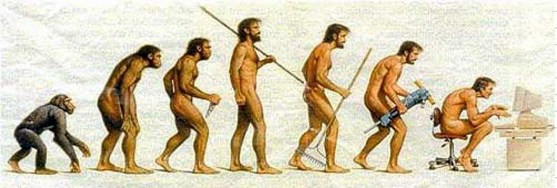

Octubre 22
Supuesta "Evolución"
Por ECGM
Hoy en día las redes sociales son tan poderosas, tan grandes, lanzadas a nivel mundial donde todo el mundo tiene acceso a ellas, todas las personas mantienen de forma continúa navegando en ellas 24/7 por su alto contenido de información. En el trabajo, en el hogar, hasta los mismos jóvenes en sus escuelas están más pendientes del celular que de las clases, esa es la mayor preocupación de los padres, puesto que en este siglo los jóvenes adquieren a diario nuevas habilidades de aprendizaje a un ritmo impresionante y no quieren que la tecnología dañe sus capacidades por estar conectados a un aparato cuyo beneficio puede ser para bien o para mal.

Pienso que las personas ya no pueden vivir sin las redes sociales es casi como la nueva era, si se quedan sin ellas, se quedan incomunicados con el resto del mundo, se volverían locos debido tal vez a una adicción, porque existen personas muy adictas a las redes que no las pueden dejar de ver ni por un minuto. Esto afecta mucho a la capacidad del ser humano pues científicamente está comprobado que los seres humanos interactúan mucho con la tecnología y no cometen errores, pero así no les están enseñando a ser profesionales, a la hora de saltar a la vida real se estrellan con muchas cosas.
Los millennials o generación Z se hacen llamar más avanzados que las antiguas generaciones o coloridas épocas de los 70, con un conocimiento tecnológico amplio el cual puede llegar a romper con los esquemas que vengan con la innovación. Los millennials son las personas nacidas en el año 80 hasta el 2000 pero ellos ya no están muy de moda ahora somos nosotros el centro de atención, la generación Z nacidos en el 94 hasta 2010 también llamados los postmillennials, nosotros somos los nuevos reyes de la tecnología.
Opino que la tecnología ha avanzado mucho en las últimas décadas y ha aportado mucho en innovación, transporte, maquinas, fabricas, industrias y etc. La tecnología es muy primordial para todo ser humano dependemos mucho de ella para hacer cualquier actividad que se nos presente en el día. Ha ayudado a los humanos a tener muchos cambios como por ejemplo en la medicina, de antes pasar a esperar como 1 semana por un resultado de cualquier motivo, hoy en día hay herramientas tecnológicas que nos dicen exactamente qué es lo que tienes y hasta como te pueden tratar.